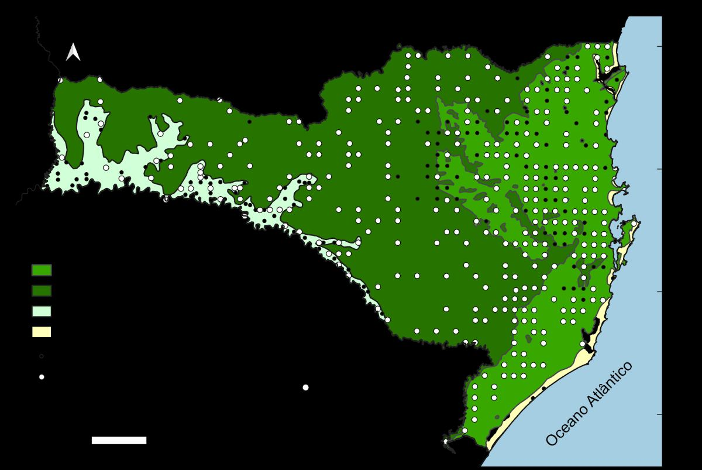

Ciclo 2
Inventário dos Remanescentes Florestais
O primeiro ciclo de medições em campo aconteceu entre 2007 e 2011, com o levantamento de 480 Unidades Amostrais distribuídas pelo estado. O segundo ciclo de medições foi conduzido entre 2014 e 2019, com a remedição de 361 Unidades Amostrais distribuídas pelo estado, sendo 314 instaladas em florestas em estágio médio ou avançado de sucessão e 47 em florestas em estágio inicial de sucessão.
Os levantamentos contínuos da vegetação de Santa Catarina fornecem dados importantes para a geração de informações sobre a dinâmica das florestas, como taxas de crescimento, de mortalidade e de recrutamento (ingresso de novas árvores na floresta). Essas informações contribuem para o estudo de processos ecológicos relacionados às florestas, e também subsidiam o manejo sustentável de recursos florestais, o acompanhamento da dinâmica de captura de carbono atmosférico pelas florestas e a elaboração de novas políticas florestais.

Das 361 Unidades Amostrais (UAs) remedidas, 160 estão localizadas na Floresta Ombrófila Densa, 161 na Floresta Ombrófila Mista e 40 na Floresta Estacional Decidual.
Com base em diferentes medições das florestas ao longo do tempo, um dos principais interesses do FlorestaSC é estimar a mudança líquida de variáveis como número de árvores, área basal e biomassa acima do solo por hectare.
A mudança líquida em número de indivíduos por hectare é definida como o número de árvores que ingressaram na florestal menos o número de árvores que morreram em um dado intervalo de tempo.
Já a mudança líquida em área basal consiste no incremento em área basal das árvores sobreviventes mais a área basal das árvores que ingressaram na floresta, menos a área basal das árvores que morreram no mesmo período. O mesmo se aplica à biomassa.
Resultados
A mudança líquida em número de indivíduos por hectare nas florestas de SC é positiva num período de 5 anos. Isso significa que o número de árvores que ingressaram nas florestas catarinenses é maior que o número de árvores que morreram.
O aumento no número de árvores por hectare em cinco anos foi, em média, de:
- 4,3% para a Floresta Ombrófila Densa (FOD);
- 4,8% para a Floresta Ombrófila Mista (FOM);
- 7,7% para a Floresta Estacional Decidual (FED).

Mudança líquida média em número de árvores por hectare em 5 anos
A mudança líquida em área basal nas florestas de SC é positiva num período de 5 anos. Isso significa que as florestas catarinenses estão ainda num processo de crescimento.
A Floresta Ombrófila Densa (FOD) apresentou, em média, 6,4% de aumento em sua área basal por hectare;
A Floresta Ombrófila Mista (FOM) apresentou, em média, 5,7% de aumento em sua área basal por hectare;
A Floresta Estacional Decidual (FED) apresentou, em média, 5,7% de aumento em sua área basal por hectare.

Mudança líquida média em área basal por hectare em 5 anos
A mudança líquida em biomassa acima do solo nas florestas de SC é positiva num período de 5 anos. Isso significa que as florestas catarinenses estão absorvendo carbono atmosférico, pois cerca de 50% da biomassa de uma floresta é carbono.
A Floresta Ombrófila Densa (FOD) apresentou, em média, 7,7% de aumento em seu estoque de biomassa/carbono por hectare;
A Floresta Ombrófila Mista (FOM) apresentou, em média, 5,9% de aumento em seu estoque de biomassa/carbono por hectare;
A Floresta Estacional Decidual (FED) apresentou, em média, 6,0% de aumento em seu estoque de biomassa/carbono por hectare.

Mudança líquida média em biomassa por hectare em 5 anos
A diferença em número de espécies por UA da primeira para a segunda medição é média positiva num período de 5 anos. Isso significa que, em média, novas espécies estão ingressando nas florestas catarinense.
A Floresta Ombrófila Densa (FOD) apresentou, em média, 3 novas espécies por UA;
A Floresta Ombrófila Mista (FOM) apresentou, em média, 2 novas espécies por UA;
A Floresta Estacional Decidual (FED) apresentou, em média, 3 novas espécies por UA.

Diferença em riqueza de espécies entre os ciclos de medição
Resultados mais detalhados estão disponíveis nestes artigos:
Vibrans et al. (2022, em Português) & Vibrans et al. (2022, em Inglês)
Diversidade Genética
No Ciclo 2, o foco para análise genética passou a ser em indivíduos regenerantes das espécies ameaçadas de extinção ou de relevância econômica e social.
Os indivíduos regenerantes apresentaram resultados variados, indicando que os processos de manutenção da diversidade genética são distintos entre as espécies, portanto podem necessitar de distintas ações de conservação. Por exemplo, os regenerantes da grápia, do palmiteiro e do pinheiro-brasileiro apresentaram grande potencial de manter a diversidade genética dos reprodutivos, ao contrário dos regenerantes da canela-preta, fato que alerta para risco iminente de perda de diversidade e potencial de adaptação das populações dessa espécie.
Quando avaliado índices de diversidade das populações reprodutivas e regenerantes conjuntamente, as espécies mais vulneráveis em termos genéticos são Dicksonia sellowiana (xaxim-bugio) e Podocarpus lambertii (Pinheiro-bravo).
Com base nos resultados obtidos, desde 2007, são sugeridas as seguintes medidas de conservação, em termos gerais: ações de aumento da conectividade fragmentos florestais; utilização de espécies nativas em plantios para uso de recursos florestais; estabelecimento de áreas de coleta de sementes; conservação da fauna, o grande responsável pela dispersão e polinização da maioria das espécies estudadas; fortalecimento de ações de fiscalização contra a exploração ilegal de recursos florestais.
Vale ressaltar que para quase todas as espécies existem populações com alto nível de diversidade genética para estruturação de Áreas de Coleta de Sementes, aspecto que permite agregar valor aos remanescentes e ainda viabilizar fontes de propágulos de qualidade para ações de restauração, recomposição, ampliação de conectividade entre remanescentes ou simplesmente plantios para uso dos recursos florestais nativos.
Ao considerar as populações coletadas dentro das Unidades de Conservação (UC) é possível concluir que as UC são eficientes na conservação da diversidade genética das espécies, principalmente de Dicksonia sellowiana (xaxim-bugio) e Ocotea catharinensis (canela-preta).
Mais informações sobre o estudo da diversidade genética podem ser encontradas no Capítulo 2 (metodologia) e Capítulo 4 (resultados) do livro Volume 7.

FlorestaSC
florestasc@furb.br 47 3221-6100
Página migrada de floresta.sc.gov.br.